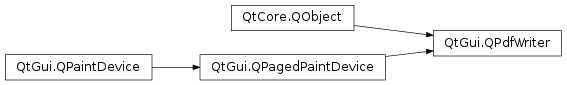

QPdfWriter¶
Synopsis¶
Functions¶
- def
creator() - def
pdfVersion() - def
resolution() - def
setCreator(creator) - def
setPdfVersion(version) - def
setResolution(resolution) - def
setTitle(title) - def
title()
Detailed Description¶
The
PySide2.QtGui.QPdfWriterclass is a class to generate PDFs that can be used as a paint device.
PySide2.QtGui.QPdfWritergenerates PDF out of a series of drawing commands usingPySide2.QtGui.QPainter. ThePySide2.QtGui.QPdfWriter.newPage()method can be used to create several pages.
-
class
PySide2.QtGui.QPdfWriter(device)¶ -
class
PySide2.QtGui.QPdfWriter(filename) Parameters: - filename – unicode
- device –
PySide2.QtCore.QIODevice
Constructs a PDF writer that will write the pdf to
device.Constructs a PDF writer that will write the pdf to
filename.
-
PySide2.QtGui.QPdfWriter.creator()¶ Return type: unicode Returns the creator of the document.
-
PySide2.QtGui.QPdfWriter.pdfVersion()¶ Return type: PySide2.QtGui.QPagedPaintDevice.PdfVersionReturns the PDF version for this writer. The default is
PdfVersion_1_4.
-
PySide2.QtGui.QPdfWriter.resolution()¶ Return type: PySide2.QtCore.intReturns the resolution of the PDF in DPI.
-
PySide2.QtGui.QPdfWriter.setCreator(creator)¶ Parameters: creator – unicode Sets the creator of the document to
creator.See also
-
PySide2.QtGui.QPdfWriter.setPdfVersion(version)¶ Parameters: version – PySide2.QtGui.QPagedPaintDevice.PdfVersionSets the PDF version for this writer to
version.If
versionis the same value as currently set then no change will be made.
-
PySide2.QtGui.QPdfWriter.setResolution(resolution)¶ Parameters: resolution – PySide2.QtCore.intSets the PDF
resolutionin DPI.This setting affects the coordinate system as returned by, for example
QPainter.viewport().
-
PySide2.QtGui.QPdfWriter.setTitle(title)¶ Parameters: title – unicode Sets the title of the document being created to
title.See also
-
PySide2.QtGui.QPdfWriter.title()¶ Return type: unicode Returns the title of the document.
See also
© 2018 The Qt Company Ltd. Documentation contributions included herein are the copyrights of their respective owners. The documentation provided herein is licensed under the terms of the GNU Free Documentation License version 1.3 as published by the Free Software Foundation. Qt and respective logos are trademarks of The Qt Company Ltd. in Finland and/or other countries worldwide. All other trademarks are property of their respective owners.